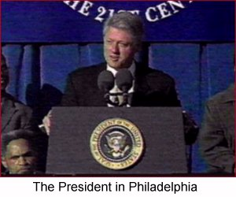
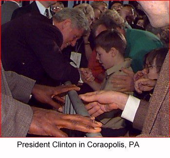

On the Horizon

Call Clinton/Gore headquarters for details —
Come out and show your support!
As we head into the final days
of the campaign, we need your help
energizing your community to
GET OUT THE VOTE!Call the Clinton/Gore office number
below to volunteer.Pennsylvania Highlights
October 29 - President Clinton in Philadelphia
September 25 - President Clinton
in Coraopolis, PAPittsburgh resident Jeffrey
Brick tells us why he
supports the President
in the 3rd edition of PhiladelphiaClinton-Gore '96 Headquarters
1420 Walnut Street
5th Floor
Philadelphia, PA 19102Phone: 215-985-4096
Fax: 215-985-4116
State Director: Mike Frazier
Pittsburgh
Clinton-Gore '96 Headquarters —Photo Highlights
441 Smithfield
2nd Floor
Pittsburgh, PA 15222Phone: 412-434-7456
Fax: 412-434-7457
Victory '96
510 North Third Street
Harrisburg, PA 17101Phone: 717-238-9381
Fax: 717-233-3472
The Coordinated Campaign is a distinct entity, directed by the Democratic National Party and the State Democratic Parties, and designed to elect Democrats to all levels of office.
Paid for by Clinton/Gore ’96 General Election Committee, Inc.